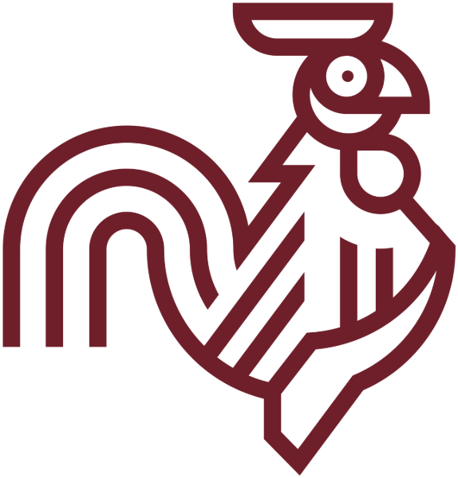
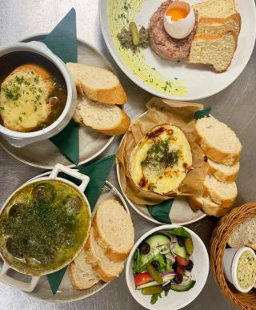

De smaak van Frankrijk in Eindhoven.
Geen oesters en foie gras, maar eenvoudige klassieke gerechten zonder poespas. Geurige stoofpotjes, een goed gevulde quiche, tarte tatin en natuurlijk coq au vin. Prima betaalbaar, zoals het in een bistro hoort.
Diner dinsdag t/m zondag, 17.00 – 22.00 uur
Dommelstraat 32, Eindhoven

De echte Franse keuken, geen haute cuisine
Bistro Le Goût brengt de Franse bistro naar de Dommelstraat. Op tafel staan de klassiekers die je kent van een avond in Frankrijk: soupe à l'oignon met Gruyère-crouton, boeuf bourguignon met rode wijn, sole meunière in roomboter en een moelleux au chocolat om mee af te sluiten.
Eenvoudig, eerlijk en met smaak. En dat alles prima betaalbaar, zoals het in een bistro hoort te zijn.
- Geurige stoofpotjes
- Een goed gevulde quiche
- Tarte tatin
- Coq au vin



Offre de la semaine
Menu gourmand op dinsdag, woensdag en donderdag
Kies drie gangen uit ons menu gourmand: van charcuterie of zalmtartaar vooraf tot coq au vin blanc of boeuf bourguignon als hoofdgerecht en tarte tatin toe.
Bekijk het menu gourmandLa carte
Franse klassiekers, met een Nederlandse omschrijving. Alle hoofdgerechten worden geserveerd met verse groenten en aardappelgarnituur.
Entrées
- Baguette beurre de Paris5,50Stokbrood, kruidenboter
- Soupe à l'oignon9,50Uiensoep, Gruyère crouton, stokbrood
- Camembert rôti au miel13,50Gegrilde camembert, honing, tijm, brood, salade
- Charcuterie14,50Selectie van Franse vleeswaren, stokbrood
- Steak tartare15,50Rundvlees, rauw ei, kappertjes, sjalot, vadouvan crème
- Crevettes13,50Garnalen, gekookt, vadouvan mayonaise, citroen
- Tartare de saumon15,50Zalmtartaar, limoenmayonaise, kappertjes, rode ui
- Escargots16,50Slakken van “Slow Escargots”, kruidenboter, stokbrood
Plats principaux
- Confit de canard25,50Gekonfijte eendenbout, sinaasappelsaus
- Coq au vin26,50Stoofpotje, kip, champignon, witte wijn, dragon
- Boeuf bourguignon27,50Stoofpotje, rundvlees, champignons, rode wijn, zilverui
- Filet de boeuf36,50Tournedos, blauwschimmelkaas-, dolin- of pepersaus
- Filet de saumon26,50Zalm, kruiden veloute, citroen
- Sole meunière27,50Sliptong, roomboter, citroen, peterselie
- Duxelle en croute24,50Paddenstoel, spinazie, camembert, walnoot, bladerdeeg
Alle hoofdgerechten worden geserveerd met verse groenten en aardappelgarnituur.
Desserts
- Tarte tatin9,50Appel, Calvados, karamel, vanille ijs
- Moelleux au chocolat9,50Chocolade lavacake, karamel zeezout
- Macaron glacé9,50Macaron, rood fruit, vanille ijs
- Plateau de fromages15,50Selectie van Franse kazen, vijgencompote, druiven
Cafés spéciaux
- Café Marnier9,00Koffie, Grand Marnier, slagroom
- Café Le Goût13,00Koffie, cappuccino of thee met Franse mini desserts
Prijzen in euro’s.


Menu gourmand
Drie gangen, u kiest per gang. Op dinsdag, woensdag en donderdag onze offre de la semaine.
Vooraf
Charcuterie
Tartare de saumon
Quiche florentine
Hoofdgerecht
Coq au vin blanc
Boeuf bourguignon
Filet de saumon
Duxelle en croute
Na
Tarte tatin
Moelleux au chocolat
Dessert Le Goût
Met een groep van 8 personen of meer? Dan vragen we u dit 3-gangen keuzemenu te kiezen, of een beperkte keuze uit de kaart.
Reserveer een tafel
Wij zijn open voor diner van dinsdag tot en met zondag, van 17.00 tot 22.00 uur. Bel ons (telefonisch bereikbaar vanaf 14.30 uur) of stuur een mail.
Met een groep
Vanaf 8 personen verzoeken wij u vriendelijk om gebruik te maken van ons 3-gangen keuzemenu of een beperkte keuze te maken uit de kaart, zodat wij de kwaliteit en snelheid voor u en de andere gasten kunnen waarborgen. Wij hanteren 1 rekening per tafel.
Contact
- Maandag
- Gesloten
- Dinsdag t/m zondag
- 17.00 – 22.00 uur
Dommelstraat 32
5611 CL Eindhoven
+31 (0)40 298 90 11 (vanaf 14.30 uur)
info@bistrolegout.nl
Volg ons
Op Instagram en Facebook delen we foto’s uit de bistro en bijzondere avonden, zoals eerder de Beaujolais Nouveau-avond, een Champagne-masterclass, het Franse kerstdiner en 14 juli.
Werken bij Le Goût
Zin om ons keukenteam te versterken? Mail naar info@bistrolegout.nl.